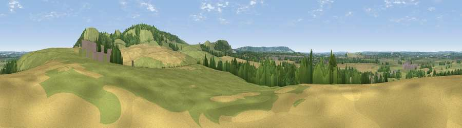

Viewpoint near Ivinghoe
#25418 in England · top 27% of its area beats it · near Ivinghoe · path 264 mWhere it is
The exact computed spot (SP 94825 16425). Click the marker for map links.
Public access: the nearest public right of way is about 264 m away — the final stretch may cross private land. Computed from Natural England's CRoW access layer and OpenStreetMap rights of way — not the legal definitive map. Always verify locally.
The view, rendered

A 360° render of this exact spot computed from the terrain model, tree cover and land cover — summer colours, afternoon light, calibrated against photographs of famous viewpoints. Real trees, hedges and buildings will differ in detail.
The panorama
Grey silhouette: terrain skyline in each direction (720 bearings, Earth curvature and refraction included). Dashed green: skyline with trees (+15 m) and buildings (+8 m) as obstacles. Blue strip: how far the ground is visible on each bearing.
Where the view opens
Wedge length = distance to the farthest visible ground on that bearing (vegetation-aware). Rings at 10, 25 and 50 km.
What fills the view
47% grassland · 32% cropland · 16% woodland · 5% built-up
Angular shares of the visible panorama (visual magnitude), not map area. Landscape diversity 0.50 (0–1 Shannon).
Key numbers
More beautiful places nearby
The staircase of upgrades: each row has a higher view potential than everything closer. Driving times are estimates from straight-line distance, calibrated against real road routing — check an actual route before setting out.
| Place | Direction | Drive | Score |
|---|---|---|---|
| Viewpoint near Ivinghoe | ESE · 1 km | ~4 min | 66.7 |
| Beacon Hill | ENE · 1 km | ~4 min | 74.1 |
| Viewpoint near Halton | SW · 9 km | ~17 min | 74.3 |
| Coombe Hill Monument | SW · 14 km | ~25 min | 75.5 |
| Viewpoint near Woolstone | WSW · 71 km | ~95 min | 76.7 |
| Viewpoint near Meon Vale | WNW · 82 km | ~106 min | 77.0 |
| Broadway Hill | WNW · 86 km | ~110 min | 77.7 |
| Cleeve Hill | W · 96 km | ~121 min | 79.8 |
51.83839, -0.62509 · source: screening · position refined by local search. Computed location — check access rights before visiting.